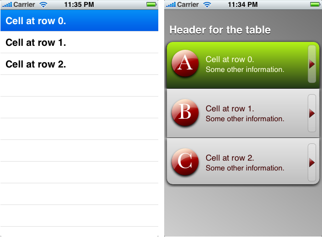

Please note: this article is part of the older "Objective-C era" on Cocoa with Love. I don't keep these articles up-to-date; please be wary of broken code or potentially out-of-date information. Read "A new era for Cocoa with Love" for more.
Easy custom UITableView drawing
It is really easy to customize your UITableViews. I'll show you how to completely customize the appearance of UITableViews without overriding or subclassing and without the need for any tricky hackery.
Make my table pretty
The core of most iPhone applications is the UITableView. To make your iPhone application stand out, the simplest way is to make your UITableView look good.
Customizing your UITableView can be really easy. You don't need custom drawing code. You don't need subclasses of anything. Cocoa Touch provides all the drawing capability you need, all you have to do is use the right classes in the right ways and provide the layout.
The sample application
The approach I'll show you will turn the table on the left into the table on the right:
Left: a default UITableView with three rows. Right: the same table view after customization.
How to fail at UITableView customizing
Coming from Mac OS X made it harder for me — UITableView needs to be customized in a very particular way and structurally, it is very different to Mac OS X's NSTableView and NSCell drawing.
The following are all really bad ways to customize a table (even though you can make it work):
- Subclassing
UITableViewto customize the drawing of cells - Subclassing
UITableViewCellto customize the drawing of cell content - Creating your own array of
UITableViewCells and returning these instead of usingdequeueReusableCellWithIdentifier:
About the second point: it is okay to customize UITableViewCell — but you shouldn't really use it for drawing. The UITableViewCell class is more of a controller class — it handles behaviors and layout, not drawing. You can customize UITableViewCell to load a specific contentView (and do the custom drawing there).
That last point (that you should always use dequeueReusableCellWithIdentifier:) is only peripherally related to drawing but it will significantly slow your drawing down if you avoid the normal cell queuing architecture.
How to succeed at UITableView customizing
There are only a few points to understand related to table drawing.
First: the UITableView does not itself draw anything except the background. To customize the background of a UITableView, all you need to do is set its backgroundColor to [UIColor clearColor] and you can draw your own background in a view behind the UITableView.
Second: The tableHeaderView (and the table footer and section headers and footers) need not be just a title. You can insert your own view, with its own subviews in the table header, giving layout and custom drawing freedom.
Third: UITableViewCell is composed of 5 different subviews. Customizing the right subview is the secret to good UITableViewCell drawing. The subviews are:
backgroundView— the entire background of the row (including what looks like theUITableView's background inUITableViewStyleGroupedstyle tables.selectedBackgroundView— replaces thebackgroundViewwhen the row is selected.image— a customizable image (not actually a subview) at the left of the cell.accessoryView— a customizable view at the right of the cell.contentView— a customizable view between theimageand theaccessoryView(technically, it extends behind theimage).
You can customize any of these (except image which must be a UIImage) using your own custom drawn views.
However, since the pixel size of the table never changes, it is often easiest just to use UIImageViews for each of them. Then you can take highly complex views drawn in separate programs, cut them into the 5 necessary pieces and let the automatic caching of UIImage's named image cache manage your memory for you.
There is an argument against drawing your views in code and that is that the iPhone's drawing is not nearly as fast as Mac OS X. Operations like gradients and multiple overlapped components can really tax the iPhone.
Custom drawing code is a good choice for simple and flat colour drawing. In most other cases — as in this post — I recommend you use UIImageView to draw your views in a table.
Implementation
With all custom drawing handled by UIImageView, that still leaves some work to do. You must handle all layout and configuring of views.
Configuration of the UITableView and layout of the table header
As an example of what that means, have a look at the viewDidLoad method for this post:
- (void)viewDidLoad
{
//
// Change the properties of the imageView and tableView (these could be set
// in interface builder instead).
//
tableView.separatorStyle = UITableViewCellSeparatorStyleNone;
tableView.rowHeight = 100;
tableView.backgroundColor = [UIColor clearColor];
imageView.image = [UIImage imageNamed:@"gradientBackground.png"];
//
// Create a header view. Wrap it in a container to allow us to position
// it better.
//
UIView *containerView =
[[[UIView alloc]
initWithFrame:CGRectMake(0, 0, 300, 60)]
autorelease];
UILabel *headerLabel =
[[[UILabel alloc]
initWithFrame:CGRectMake(10, 20, 300, 40)]
autorelease];
headerLabel.text = NSLocalizedString(@"Header for the table", @"");
headerLabel.textColor = [UIColor whiteColor];
headerLabel.shadowColor = [UIColor blackColor];
headerLabel.shadowOffset = CGSizeMake(0, 1);
headerLabel.font = [UIFont boldSystemFontOfSize:22];
headerLabel.backgroundColor = [UIColor clearColor];
[containerView addSubview:headerLabel];
self.tableView.tableHeaderView = containerView;
}This method handles the configuration of the tableView (setting the backgroundColor, rowHeight and sets an image behind the table) but also creates its own layout for the table header.
The layout of the header here is for the table's header view. You can include a custom header for every table section by implementing the UITableViewDelegate method tableView:viewForHeaderInSection:. There are equivalent properties and methods for the table and section footers.
It is possible to handle this type of layout in Interface Builder and load the XIB files for this type of layout. Sadly though, on the iPhone, reading loading lots of views from XIB files is slow (I suspect this is due to slow reading from the Flash memory) and doesn't always allow configuration of every property.
For this reason, I normally sketch my views in Interface Builder and then manually recreate the same thing in code. That's what I've done here: picking coordinates for the headerLabel that looks balanced in the view.
Cell backgrounds
The cell background needs to incorporate the tops and bottoms of table "sections". For this reason, the backgroundView and selectedBackgroundView normally need to be set on a row-by-row basis.
In your tableView:cellForRowAtIndexPath: method where you are configuring the cell for a given row, this code will handle that behavior:
UIImage *rowBackground;
UIImage *selectionBackground;
NSInteger sectionRows = [aTableView numberOfRowsInSection:[indexPath section]];
NSInteger row = [indexPath row];
if (row == 0 && row == sectionRows - 1)
{
rowBackground = [UIImage imageNamed:@"topAndBottomRow.png"];
selectionBackground = [UIImage imageNamed:@"topAndBottomRowSelected.png"];
}
else if (row == 0)
{
rowBackground = [UIImage imageNamed:@"topRow.png"];
selectionBackground = [UIImage imageNamed:@"topRowSelected.png"];
}
else if (row == sectionRows - 1)
{
rowBackground = [UIImage imageNamed:@"bottomRow.png"];
selectionBackground = [UIImage imageNamed:@"bottomRowSelected.png"];
}
else
{
rowBackground = [UIImage imageNamed:@"middleRow.png"];
selectionBackground = [UIImage imageNamed:@"middleRowSelected.png"];
}
((UIImageView *)cell.backgroundView).image = rowBackground;
((UIImageView *)cell.selectedBackgroundView).image = selectionBackground;Layout within the contentView
Layout of elements within the contentView need only be set on construction of the contentView (not on a row-by-row basis).
Sadly, laying out UILabels in the contentView (like the "Cell at row X." and "Some other infomation." lables in this example) is a little verbose.
The following code is run immediately after the allocation of the UITableViewCell to position the "Cell at row X." label:
const CGFloat LABEL_HEIGHT = 20;
UIImage *image = [UIImage imageNamed:@"imageA.png"];
//
// Create the label for the top row of text
//
topLabel =
[[[UILabel alloc]
initWithFrame:
CGRectMake(
image.size.width + 2.0 * cell.indentationWidth,
0.5 * (aTableView.rowHeight - 2 * LABEL_HEIGHT),
aTableView.bounds.size.width -
image.size.width - 4.0 * cell.indentationWidth
- indicatorImage.size.width,
LABEL_HEIGHT)]
autorelease];
[cell.contentView addSubview:topLabel];
//
// Configure the properties for the text that are the same on every row
//
topLabel.tag = TOP_LABEL_TAG;
topLabel.backgroundColor = [UIColor clearColor];
topLabel.textColor = [UIColor colorWithRed:0.25 green:0.0 blue:0.0 alpha:1.0];
topLabel.highlightedTextColor = [UIColor colorWithRed:1.0 green:1.0 blue:0.9 alpha:1.0];
topLabel.font = [UIFont systemFontOfSize:[UIFont labelFontSize]];
//
// Create a background image view.
//
cell.backgroundView = [[[UIImageView alloc] init] autorelease];
cell.selectedBackgroundView = [[[UIImageView alloc] init] autorelease];In my mind, it seems like there should be a more efficient way to do this. I hold out the possibility that there is.
This code spends most of its time working out where the label should be placed. It needs to go right of the image, left of the accessoryView, middle of the row but above the "Some other information." label.
Other adornments
The accessoryView is just a UIImageView. The cell.image is set as a property. These are extremely simple additions but they make the table cells far more impactful.
Conclusion
You can download the EasyCustomTable project as a zip file (60kb).
The code includes a #define at the top that allows you to toggle the custom drawing on and off.
None of this is particularly revolutionary (it is all in the iPhone documentation) but it is still easy to miss the properties and methods that make it easy.
This does require custom images. If you've never drawn anything, now is a good time to learn inkscape (it's free and very good for the price). You could also use Adobe Illustrator but if you have that much money, pay an artist to draw it for you.
Layout of the content in code is probably the weakest part of the approach I've presented. To make it easier, you can pre-layout everything in Interface Builder and copy the layout into code. For complicated layouts, you could even try using nib2objc to convert your XIB files to code automatically (although I've never done this, I'm just mentioning nib2objc because the idea is so cool).
What does it mean when you assign [super init] to self?
Invoking other processes in Cocoa